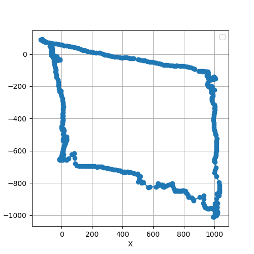
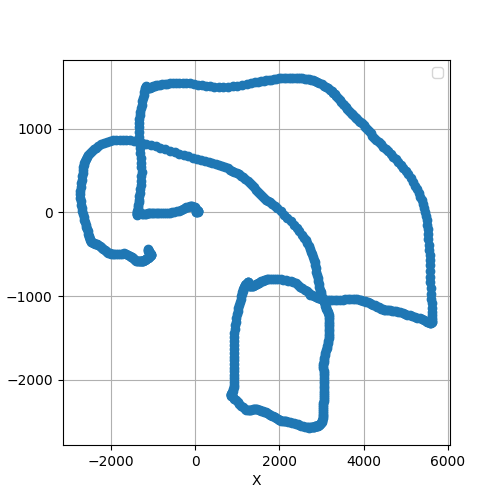
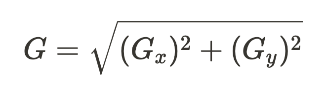
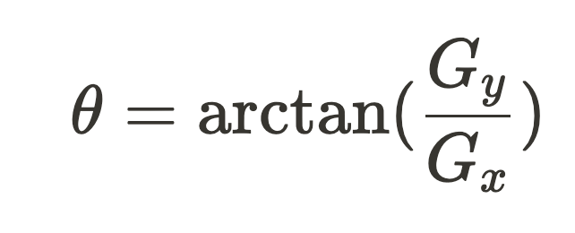
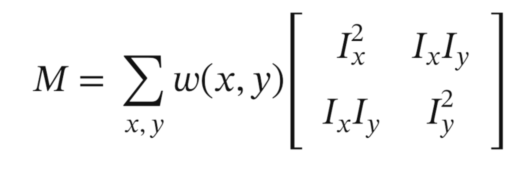
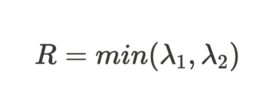
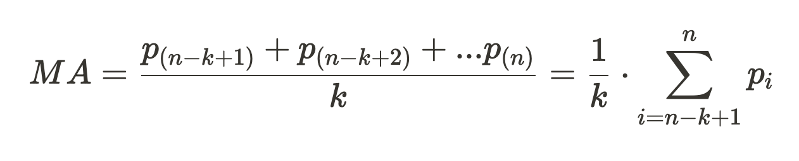

Dynamic Object Localization and Positioning Using Optical Flow from a Moving Frame of Reference
One Sentence Summary: This project aims to identify the feasibility of tracking an object’s position from the moving object’s frame using optical flow (ego-motion) and test its resilience in diverse environmental contexts.
Contents:
Overview
Optical flow tracking is a technique that estimates the motion of objects, surfaces, and edges in a visual scene based on the relative motion between the observer and the scene. This project focuses on the Lucas-Kanade Algorithm, a sparse optical flow estimation algorithm that is particularly useful in tracking the movement of objects where object detection may not be possible. Using a moving average filter to refine optical flow vectors, we can determine the average motion’s magnitude and direction, which can be mapped onto an XY coordinate plane. Rather than remaining stationary and tracking a moving object, the camera is attached to the moving object (ego-motion) to track the landmarks around it and find its position relatively. The applicability of the method spans from ground-based robot localization (visual odometry) to aerial drone navigation. This investigation delves into the method’s adaptability and resilience across diverse environmental contexts and operational ranges, but also pertinent limitations and challenges, including susceptibility to plane alterations, processing overhead, environmental variables, and motion-induced blur.
Steps within Algorithm:
A Canny Edge Detection filter is applied to bring out the edges.
The Shi-Tomasi corner detectionidentifies the most reliable tracking features of the image.
The Lucas-Kanade method assumes that the displacement of the pixels between two consecutive frames is small and constant within a neighborhood of the pixel. The algorithm then solves a system of linear equations to find the optical flow vector for each pixel that has a feature to track.
The dx and dy of each frame are appended to a stack with fixed length and averaged, creating a moving average filter to smooth the vectors over a window of frames. The moving average filterreduces the noise and outliers in the optical flow vectors and provides a more stable estimate of the motion.
The algorithm then computes the magnitude and directional vector of the optical flow for each landmark, which represents the speed and direction of the motion of the object relative to the camera.
The positional graph can be created by tracking cumulative x and y values and updating it each frame using the dx and dy.
The following are demonstrations from different distances, speeds, and environments. Each path starts and ends at the same location to help provide quantifiable error without another source of localization.
Drone Navigation Location Accuracy
This video shows a post-processed video of a top-down view from the area around the San Francisco Golden Gate Bridge, starting and ending at the same location.
After making a loop around the city, there appears to be an error in the positive x and y direction by 3.5% of the path length, likely as a result of the lack of tuning for the parameters and the speed changes. From top-down shots recorded in a similar fashion, the error ranged from 2.80-5.27% of the total path length, in the same general direction when the paths are similar.
This video is a screen recording of the location on Google Maps, navigated by panning so there are moments of abrupt acceleration. An actual drone in navigation will not only have a lower magnitude of acceleration, but also likely have a lower velocity, providing more concrete data points. Despite that, this method would need to be tuned with a reliable localization system to provide accurate results
Ideal Scenario - Textured White Surface Panning
This video shows a post-processed video of a camera panning a surface in straight lines, recorded by screen recording panning through a textured surface, which is why the lines tracked are so straight.
The algorithm tracked showed negligible error since the image was flat and uniform, and the motion was in perfectly straight lines.
The white surface has a ridgy texture that enables the algorithm to work. A smoother and glossier surface would likely have a greater difficulty in tracking.
Wood Pattern Panning
The wood panning is recorded in the same way as the white surface (one above), except it has a greater variety in the magnitude and direction of the vectors. The built-up error is noticeable but still very minute.
Video camera mounted on Chassis Facing the Roof

A video camera is strapped onto the chassis, moving in a parallelogram, starting and ending at the same location. The algorithm tracked the roof’s position from the moving camera's frame, showing little error since the roof stayed relatively consistently on the same plane as the camera and had no abrupt movements. However, slight back-and-forth jitters are present since the camera is not firmly attached. Since the movement in this video is over a very short distance, less motion smoothing will produce the most accurate result.
Limitations
The algorithm has some limitations that affect its performance and applicability in certain scenarios. Some of the main limitations are:
Inability to handle changes in plane: The algorithm assumes that the object to be tracked is on the same plane as the camera’s constant depth. However, if the object changes its plane or depth relative to the camera, the algorithm will produce inaccurate results, as it will not account for the change in perspective and scale. This can happen if the object moves closer or farther away from the camera or if the camera tilts out of the plane. In the Lucas Kanard Paper, they indicated that these problems can be solved to not only generalize 2D planar motion, but also “rotation, scaling, and shearing” (1).
Hand Held Recording
Slight variations in the plane result in drastic levels of error.

Processing time: The algorithm requires a significant amount of processing time to compute the optical flow vectors for each frame, especially if the number of features to track is large. This can limit the real-time performance of the algorithm, as it may not be able to keep up with the frame rate of the camera. These can be solved by using different techniques
Screen Recording Real time Speed of Processing.
The processing time is slower and does not match the input video speed, until the entire video is finished and exported to a output file. This makes it difficult to use in live applications, although there are many steps that can be to improve this algorithm to be able to do that.
Fast motion: The algorithm relies on the assumption that the displacement of the pixels between two consecutive frames is small. However, if the motion of the object or the camera is too fast, the displacement may exceed the window size of the Lucas-Kanade method, and the algorithm will fail to find a match for the features. This can result in tracking errors or failures, as well as motion blur in the frames, which decreases the clarity of the edges within the frame. This also introduces what I call spiky artifacts within the image that look like sparks. To decrease the effect of fast motion, we can change the window size so that it can capture the displacement of the points even if they are spread farther apart.
Using the same closeup input video from processing time, with a greater window size and canny threshold as well as a lower moving average smoothing. The spiky artifacts become apparent, disrupting the accuracy of the tracking till the data is unusable.
Before vs. After Parameters tuned to minimize spiky artifacts
Note: The window size and canny thresholds have been decreased to accommodate the rapid speed of the video.
Moving Objects - Besides the frame of reference, other objects cannot be moving since the model looks at the relative motion of the environment to determine its position. One way to overcome this is by creating a bounding box around the moving object and omitting landmarks/corners within the region.
Explanation Behind the Algorithm
Preprocessing: The Canny Edge Detection function is used to bring out the edges in each frame of the video. The process consists of 4 main steps.
Smoothing an image using a 5x5 Gaussian filter to reduce noise, which can be done by convolving the image with a Gaussian kernel.
Calculating the intensity gradient of the image using a Sobel operator - 3x3 matrix that calculates the horizontal and vertical gradients of the images, which can be used to find the gradient magnitude and direction.
Edge Gradient
Direction
Thin out the edges using non-maximum suppression by finding the pixels that constitute local maxima. The rest of the pixels are set to zero.
Compare edges to a high and low threshold, determined by the Built-in openCV Canny Function’s parameters. Edges that are above the high threshold are considered to be strong edges. The pixels that are below the low threshold are considered to be non-edges. The pixels that are between the high and low thresholds are considered to be weak edges, which are to be discarded unless connected to a sure-edge. [1]
Identifying Landmarks: The goodFeaturesToTrack function is used to identify the best tracking landmarks in the frame.
The function implements the Shi-Tomasi method based on the eigenvalues of the second-moment matrix [2][3][4]. In a grayscale image, this matrix is defined as:
Ix and Iy are image derivatives in x and y directions respectively.
w(x,y) is a window function - gives weights to pixels underneath.
The corner response function in the Shi-Tomasi method is defined as the minimum eigenvalue of the second-moment matrix M, where λ1 and λ2 are the eigenvalues of M:
If R is greater than a certain threshold, the point is classified as a corner.
Non-maximum suppression is applied to the detected corners, essentially meaning only the corner with the highest corner response function value is selected from the neighborhood.
Feature Tracking: The calcOpticalFlowPyrLK function is used to track the corners in the subsequent frames [6]. Simplified Explanation of the Steps:
Find the disparity vector h which minimizes the difference in F(x+h) and G(x), the pixel values, for x in R (region of interest) [5].
Equation for each pixel in the area:
Ix(qi)vx+Iy(qi)vy=−It(qi)
where qi is the pixel, Ix, Iy, It are the changes in the image brightness along the x, y, and t directions, and vx and vy are the speeds of the pixel that we want to find.
Because this technique assumes the difference in pixel positions is small, Linear approximation can be used to approximate F(x+h) as hF′(x), resulting in h≈F′(x)G(x)−F(x).
Using the linear approximation F(x+h)≈F(x)+hF′(x), we can find the h which minimizes the L2 norm measure of the difference between the curves: E=∑x[F(x+h)−G(x)]2. To minimize the error with respect to h, we set ∂h∂E=0 to get
h≈∑x[F′(x)]2∑xF′(x)[G(x)−F(x)]. This can be generalized to multiple dimensions in a similar way by minimizing E.
Choice of the Lucas Kanarde Method: The advantages over the Farneback method or others is the computational efficiency, as it computes a sparse optical for a selected set of features rather dense optical flow. The Farneback processing time is over twice as long and vector accuracy cannot compare either.
Farneback vs Kanade Comparison
Postprocessing: The average flow is calculated and displayed onto the OpenCV frame using an arrowed line drawn to indicate the movement’s magnitude and direction. The position is also plotted in real time on a XY positional graph using matplotlib.
The moving average value is the average over the last k values of a stack containing n entries [7].>

Other
Next Steps: In this project, we have presented a proof of concept for tracking an object’s position from the moving object’s frame using optical flow. Since this was just proof of concept of a application of the algorithm, there lacks any legitimate quantitative data. One way to determine the error is by comparing the model’s predictions to traditional methods like GPS, odometry, etc. Lucas-Kanade paper discussed applications between two images are “related not by a simple translation, but by an arbitrary linear transformation, such as rotation, scaling, and shearing” [5]. It can also used to extract depth information from stereo images.